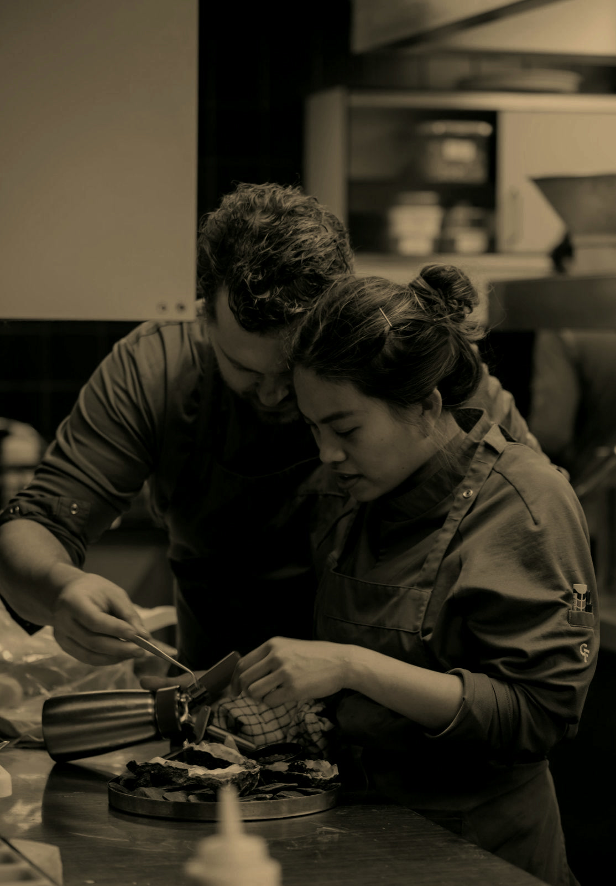

Our Story
KΛIN ka-ien
Kain is a Filipino word which means “to eat.” Saying kain to someone is a common sign of courtesy, used by Filipinos as an invitation to eat together and offer their company.
KΛIN began with the flavors Kim grew up with, and the moments Kim and Nick shared around food over the years.
What started as something deeply personal to us became something we could share.
Pamana is an homage to our respective backgrounds, not preserved exactly as they were but reinvented by time, places, and the people we’ve become.
Tara, kain. Come take a seat and eat with us.